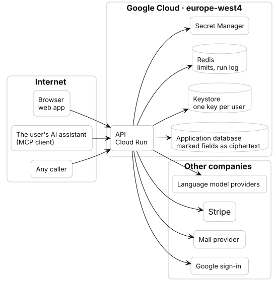

What is worth protecting, who might attack it, where data leaves our hands, and what stands in the way. The decisions are in the ADRs named in each row; this page puts them side by side and says what is left open.
As of 2026-11-28. Every control names the ADR or the file it comes from. This page is a view over those, not a review by a third party: the last external test recorded in the decision log is the penetration test of 2026-11-23 (ADR-0107).
1. What is protected
| Asset | Why it matters |
|---|---|
| Tax data of a person and their household: income, tax id, bank details, children, the return itself | identity theft and financial harm; the tax id does not change |
| Religious affiliation | a special category under GDPR Art. 9; stored only with separate consent |
| Receipt files | scans of payslips, invoices and certificates with everything on them |
| Accounts and sessions | whoever holds a session reads and changes a return |
| Keys: the field-encryption key, the keystore master key, the per-user keys | they open what the database holds as ciphertext |
| The conversation with the owl | case data in prose, sent to a model provider |
| The unlock of a tax year | what the user paid for |
2. Who is considered
- A caller without an account who probes the API, floods it or runs up cost.
- A signed-in user who tries to read or change another user's data.
- A web page in the victim's browser that sends requests with the victim's cookie.
- The user's own AI assistant, or whoever controls it, acting with a token the user granted.
- Text that reaches a language model: a receipt or a message written to steer the model.
- Someone with a copy of the database or of a backup.
- A dependency or a build step that was tampered with.
Not considered here: an attacker inside Google Cloud, and a user who enters wrong figures into their own return.
3. Where data crosses a boundary

(source: trust-boundaries.puml)
What the API sends to each other company is listed in §3 of the architecture.
4. Threats and what stands in the way
| Threat | Control | What remains |
|---|---|---|
| Reading another user's data | One guard sets the user id of a request (auth/user-context.guard.ts). The database enforces ownership itself: row-level security with an owner policy on 55 tables (migration p11_row_level_security), so a query without the right user id returns nothing. |
Paths that must look across accounts (the auth server, sweeps) use a system client; each is a place where the policy does not help. |
| A stolen or forged session | The cookie is httpOnly. A session ends 30 days after it was created and after 7 days without use; a password change revokes every other session (ADR-0103). |
The cookie is SameSite=None, because web app and API live on different sites; a stolen cookie works until it expires or is revoked. |
| Requests from a foreign web page (CSRF) | Every state-changing request to /v1 must come from an allowed origin (auth/origin-csrf.guard.ts, ADR-0103). The same list drives CORS. |
A request without an Origin header passes, by design, for clients that are not browsers. |
| Guessing passwords | New passwords are checked against known breaches. Sign-in and registration are rate-limited across instances (ADR-0109). Passkeys and TOTP exist. | A second factor is offered, not required. |
| A copy of the database or a backup | 199 columns are stored as AES-256-GCM ciphertext (architecture §8.2). Receipt files are encrypted with a key per user that lives in a separate database; deleting the key makes the file unreadable in old backups too (ADR-0059). | Not every column is encrypted: the status of a tax year, commuting distances and payment amounts are plaintext. All encrypted columns share one application key until the per-user keys of ADR-0110 are in place. |
| Keys in the wrong hands | Keys are in Secret Manager and loaded at start. The keystore has its own instance and short backups. | The Redis AUTH string is part of the Terraform state, accepted in ADR-0109. Key and data are with the same cloud provider. |
| Personal data reaching a model provider | Receipt text is scrubbed, and for two certificate types only an allowlist of rows leaves the server (ADR-0058). The owl's chat masks names and identifiers; a final check aborts the call when a tax id or an IBAN is still in the text. Personal data goes to a model only with the user's consent (ADR-0091). A kill switch turns model calls off. | With consent, personal data is sent. What a provider does with it is set by its terms, not by this system. |
| Text that steers the model | A model never writes to the return: what it proposes is a draft, and only the user's confirmation writes (ADR-0066). Amounts come from the core. A topic guard sorts typed questions (ADR-0100). | When the guard fails, the question passes and the rule in the owl's prompt is the remaining line. A user can still be misled by a wrong explanation. |
| An assistant doing more than it was allowed | Access is by OAuth with separate scopes for reading and writing (ADR-0052). A token is valid at the MCP endpoint only; the user's consent is checked on every call, so a revocation takes effect at once. | Within its scope an assistant does what its operator tells it. Writes still arrive as drafts. |
| Flooding the API or running up cost | Uploads are admitted, not queued; model calls have a daily cap across all users; exports, print jobs and receipt parsing have their own limits; request bodies to the auth server are capped (ADR-0109). | The cap on one upload per address counts per instance. A caller with many addresses is bounded only by the total for all guests. |
| A forged payment notice | The Stripe webhook is accepted only with a valid signature (unlock/stripe-payment-provider.ts); a tax year is unlocked on a verified event. |
— |
| Data kept longer than needed | Account deletion removes the data in one transaction and destroys the keys; the access log is anonymised and kept (ADR-0013). Guest data is deleted 30 days after the last write (ADR-0109). | The guest sweep runs on traffic: with no requests nothing is deleted, so the promise is "no sooner than 30 days". |
| Secrets or personal data in logs | Unexpected errors are logged without body and headers (ADR-0109); token logging was removed (ADR-0104). Access to tax data is recorded in TaxDataAccessLog. |
— |
| A tampered dependency or build | Every pull request is scanned for secrets, unsafe patterns and misconfiguration; container images fail on high and critical findings; workflow actions are pinned to a commit (architecture §8.6). | SBOMs are produced but not signed. Five findings are exempted in .trivyignore. |
5. What is open
- No alert on security events. The alerts that exist watch availability and errors (reliability); a wave of failed sign-ins or refused requests sends nothing.
- One key for all encrypted columns until ADR-0110 is migrated.
- Recovery has never been exercised, which includes recovering the keystore.
- The decision log names no schedule for external tests. It records fixes after tests and reports of November 2026 (ADR-0104, ADR-0107, ADR-0109).
- No second factor is required for an account that holds a tax return.